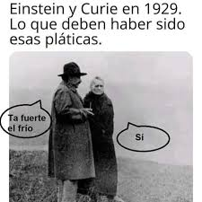

El mito del genio
Una de las conclusiones que las personas sacan cuando escuchan que estudié física es: "Seguro eres muy inteligente." Entiendo que el comentario viene desde un lugar en el que la persona juzga a partir de sus experiencias, ya que la física y las matemáticas involucradas son áreas muy odiadas por mucha gente debido a la fama creada a su alrededor sobre su dificultad, lo que provoca que sean reservadas para "mentes privilegiadas".
Personalmente pienso que esa creencia nace de que ambas son muy abstractas y que a algunas personas no se nos complica tanto dejar de lado la intuición y el sentido común. Porque, seamos sinceros, en el caso de la física ¿quién ha visto una caja deslizarse sin fricción por un plano inclinado? o para las matemáticas ¿por qué para decir que una superficie no tiene agujeros, se crea el concepto de superficie simplemente conexa? en la cuál podemos trazar una curva cerrada y contraerla a un punto sin salirnos de la superficie. Estas definiciones claro que tienen sentido y funcionan, cuando el nivel de rigor y complejidad de ambas disciplinas aumenta.
Dado lo anterior, el problema se halla en la creencia construida alrededor de las personas que estudiamos ese tipo de materias. Se piensa que al reducir el rigor y la seriedad con la que se ve la disciplina para poder explicarla , la estamos haciendo más simplona y mundana. Y los científicos no son ni una cosa ni la otra ¿o sí?
Lo mundano en la inteligencia
Estamos acustumbrados a ver a los científicos como genios, figuras misteriosas que piensan de forma distinta al resto y se la pasan encerrados en habitaciones llenas de aparatos complejos y fórmulas matemáticas. Desde luego este es el papel que desempeñan en el imaginario social. Incluso yo mismo le guardaba extremo respeto a figuras como Newton y Einstein, sumándole una intensa idealización, producto del propio estatus que la ciencia les daba. Con lo anterior no me refiero a que dejemos de tenerles respeto a los científicos, ni mucho menos, pero sí que podamos retirárles esa máscara que hasta cierto punto crea expectativas y los eleva demasiado. Personalmente creo que nos hace falta percibirlos como lo que son: humanos.
Es un ejercicio curioso e intrépido imaginar que Einstein tuvo una vida amorosa, y seguramente también padeció de diarrea algún día de su vida, o tal vez que Marie Curie se tropezó al subir un tren o eructó en una cena de navidad. Ya que, al pensar en todas éstas posibilidades, nos parecen hasta cómicas, porque rompemos con la fachada de solemnidad y seriedad que llevan a cuestas nuestros queridos genios. Reflexionando sobre su humanidad, les retiramos la carga que llevan como "mentes brillantes", de que siempre tienen que estar hablando de cosas enormemente profundas, serias e importantes. Es curioso como al indagar en sus vidas, tenemos una visión complementaria de cómo estos científicos fueron humanos y sus hábitos no tenían mucha diferencia de los nuestros. Un claro ejemplo es Richard Feynman, de quién es sabido, solía frecuentar clubes nocturnos de striptease mientras pensaba en sus teorías y bosquejaba a las chicas, o las anécdotas que se compartían sobre el misterioso Efecto Pauli, en honor al físico Wolfang Pauli, quien era considerado una persona un tanto torpe y que provocaba fallos en los aparatos experimentales cuando estaba cerca. Incluso el propio Pauli comenzó a creer en el efecto, luego del incendio de un ciclotrón durante su visita a Princeton. Me gusta pensar en qué otras historias de este tipo se pueden contar sobre las figuras importantes de la ciencia. Quiero creer que es cierto aquel momento en que Arquímedes salta desnudo de su bañera gritando ¡Eureka! o que Descartes tenía una fascinación por el estrabismo en las mujeres.
Claro que todas estas historias, rasgos y conductas parecen mundanos, acientíficos o no dignos de personas inteligentes, pero solo dejan en evidencia que los científicos no son robots, no se esfuman una vez que resuelven ecuaciones y diseñan experimentos. Fuera de las universidades se emborrachan, tocan los bongos, se enamoran de palomas, corren desnudos ante sus ayudantes, formaban sectas como Pitágoras. o soñaban con ponerse uñas buchonas rosas como Oliver Heaviside.
¿El genio nace o se hace?
Responder esta pregunta es muy parecido a pensar si existe algo así como la naturaleza humana o si los humanos somos buenos o malos en esencia, ya que nos remontamos a darle explicación a una conducta o característica a partir de los hechos predeterminados como la genética o condicionados por el entorno en que nos desarrollamos. Por supuesto, responder a la pregunta llevaría muchísimo tiempo pero me gustaría quedarme con el consenso sugerido por el psicoanálisis: Como humanos, tenemos el potencial de hacer actos buenos y malos, pero ninguno de ellos de forma individual nos define categóricamente como pesonas buenas o malas. Para Freud, por ejemplo se entiende como el conflicto entre el eros y el thánatos, es decir entre la capacidad procreadora y la letal del ser humano. Siendo la síntesis lo que nos constituye como personas reales y abandonando el concepto de esencia humana como algo constante y definitorio de una persona.
Análogamente, me parece que podríamos sacar una conclusión similar para la condición que se denomina "genialidad". No la podemos definir por completo dentro del marco de lo predeterminado (como la genética) y tampoco en términos de sucesos en el entorno de un individuo, sino como una síntesis entre ambos. Las personas en ocasiones hacemos cosas que corresponderían a conductas en teoría "inteligentes" aunque podrían ser meras coincidencias o actos aislados que no significan nada, y lo mismo pasaría si alguien está predispuesto genéticamente a tener una elevada inteligencia pero ésta nos se desarrolla o no empata con el carácter del individuo, entonces tampoco se alcanzaría este estatus deseado. Hasta cierto punto, el hecho de que no exista tal cosa como la genialidad no implica que debamos abandonar el desarrollo de la inteligencia, sino que este proceso de cultivarnos lo podemos pensar desde el punto de vista crítico. Si nosotros creemos que depende completamente de la genética, entonces nos quedamos estancados pensando que la inteligencia es un don que no nos tocó, por otro lado, si fuera cuestión de nuestros hábitos, entorno, alimentación etc, corremos el riesgo de que algún charlatán nos venda una fórmula mágica para ser más inteligentes.
En esencia ...
El genio no existe, así como no existe la persona buena o mala, o la naturaleza humana. Sin embargo, las aspiración a la genialidad es lo que nos mueve y el saber que no nacemos ni nos hacemos genios, nos permite construirnos. Quizá alrededor de esta idea, pero de una forma más amplia. Pensar que la genialidad es una mezcla de características innatas y hábitos, la democratiza de cierta forma y nos ayuda a saber que muchas veces las personas tienen cierta inteligencia porque su entorno socioeconómico les permitió desarrollarse para alcanzar esa meta. La genialidad tiene más relación con el autoconocimiento, la resolución de problemas, la creatividad y la libertad de ser.